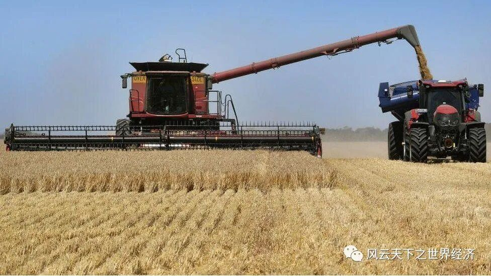
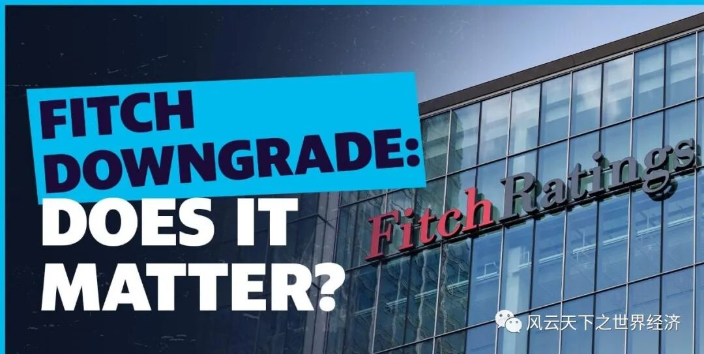
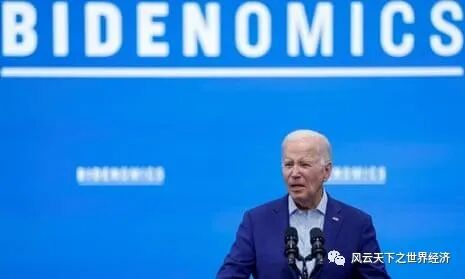

我们用Title/Date/Event/Insight/Voices/Observer来还原此时此刻的世界经济。

墨尔本附近的一个农场正在收割大麦
- Title 大麦的玄机 - Date 2023年8月5日
- Event
中国从8月5日开始取消了对澳大利亚进口大麦征收的关税。与此相关，今年4月，澳大利亚同意 "暂时中止 "其在WTO对中国 2020 年决定对澳大利亚大麦征收 80.5% 关税的申诉。
- Insights
如果你了解著名的“鸡税”（Chicken tax）就一定会明白：贸易保护措施的设立有时候会非常的随意，但是要想取消它则是异常困难。中国对澳大利亚大麦的“反倾销关税和反补贴税”关税的取消说明情况也并非总是如此。该项“双反”关税是在中澳外交关系最紧张的 2020 年中期征收的，在持续了38个月后便告终结，在这个保护主义比比皆是的时代，中澳双方所表现出来的默契难能可贵。
每当地缘政治经济趋紧的时候，粮食、石油等事关经济安全的大宗商品总会成为关注的焦点，对于拥有超级人口存量的中国更是如此。此举将为中国开辟另一个大麦进口来源，也将缓解因俄罗斯上个月退出《黑海谷物倡议》的人道主义协议而引发的对粮食价格上涨的担忧。长远来看，中澳经贸关系的缓和也为亚太局势稳定以及中澳自贸区建设增加重要筹码。
- Voice
——澳大利亚贸易部长唐-法雷尔（Don Farrell）、外交部长黄佩妮（Penny Wong）和农业部长穆雷-瓦特（Murray Watt）在一份联合声明中表示："我们欢迎这一结果，它为我们的大麦出口商重新进入中国市场铺平了道路，使澳大利亚生产商和中国消费者受益。"

惠誉下调美债信用评级
- Title 信用评级下调，美债是否还值得购买？ - Date 2023年8月1日
- Event
国际三大评级机构之一惠誉将美国长期外币发行人违约评级，也就是人们常说的信用评级，从最高级的“AAA”下调至“AA+”，这是惠誉1994年发布该评级以来首次下调美国信用评级。目前，三大评级机构（惠誉、标普和穆迪）中，只有穆迪还对美国保持AAA评级。
- Insights
果不其然，美债收益率随后上升。但是二者之间是否存在直接因果关系还需要更进一步考察。债券收益率的涨跌是市场交易行为的结果，尽管主权债务信用评级是投资人决策的重要参考维度，但是二者并不存在必然因果（否则的话，人人都可以在华尔街做个基金经理）。评级机构的债券评级基于对借贷主体违约可能性的判断，它和债券市场交易逻辑并不完全一致。
可以轻易从美债的历史数据中找到佐证。2011 年，经过奥巴马总统与共和党国会的长期对峙，双方在最后一刻达成了债务上限协议。之后，标普下调了美国政府的债务评级，理由是政治功能失调和违约风险。投资者几乎没有注意到，债券收益率在接下来的一年里不断下降。为什么会是这样？玄机便在于美债的良好兑付记录。尽管评级时有下降，但现实的情况是美国政府拖欠债务的可能性基本上为零，至少不会超过几天，甚至这种情况从未发生过。这意味评级下降并没有击溃投资者买入美债的信心，收益率一路走低也就不难理解了。
此次美债收益率上升，在不排除惠誉评级下调的微弱影响之外，还和大家对于美国经济韧性的担忧有关。美国政府为社保医疗项目的支出一路走高，超长加息周期势必会增加政府偿债的成本、尽管今年以来生产率的持续上升可以抵消一些负面影响，但是仍然不能打消市场对于美国政府赤字高企和债务增加的疑虑。如果把眼光放短，财政政策上的出路似乎只有两条：消减开支和增加税收。
- Voice
——美国财政部长耶伦：它（惠誉）充满缺陷的评估，是基于过时的数据，并未反映出一系列指标的提升，包括我们在过去两年半中看到的、与治理相关的数据。
——惠誉主权评级高级主管理查德·弗朗西斯：2007年，美国政府的债务占其经济产出的不到60%，而现在这一数据达到113%。所以这一过程清楚地预示，在接下来3年我们可能会（继续）经历财政赤字的升高。此外，由于高利率和高存量债务，我们现在看到，美国在很多方面的利息负担愈发沉重。
德国法兰克福市中心的 Zeil 购物长廊
- Title 德国是差等生吗？ - Date 2023年7月28日
- Event
德国联邦统计局（Destatis）的数据显示：与第一季度相比，德国第二季度经济停滞不前。首次估计数据显示，2023 年第二季度（4 月至 6 月）国内生产总值（GDP）停滞在零增长。根据Destatis的修正数据，作为欧洲最大经济体的德国经济在2023年第一季度萎缩了0.1%，在2022年最后一个季度萎缩了0.4%。第二季度的数据比预测的要差，因为分析师预计会有0.3%的反弹。
- Insights
德国上次被这样质疑还是25年前，当时深陷经济泥淖的德国一度被很多媒体侮为“欧洲病人”。修复两德统一后的民族裂痕、就业市场萎缩、出口市场放缓，一系列结构性的问题困扰德国经济长达数年，失业率一度维持在两位数。但是，随后的一揽子改革措施让德国完成了华丽转身，一跃成为欧洲大陆的领头羊。2006年到2017年的德国堪称经济的黄金时代，借其世界领先的工程技术成为出口强国，国际收支平衡表之好看惹来不少嫉恨的眼神，经济增速不但傲视其他欧洲近邻，甚至足以比肩美国。
但是，再次抬眼，德国已招致再次沦为差等生的嫌疑。全球经济的分化态势日渐明显，在德国经济略显疲态之时，世界经济仍在风云变幻。
如今的德国正在经历第三个季度的停滞或萎缩，最终可能成为2023年唯一出现负增长的大型经济体。问题不仅存在于眼前，根据国际货币基金组织的预测，德国在未来五年的增长速度也将低于美国、英国、法国和西班牙。
尽管德国的传统工业依然出色，但是这种出色的背面则是新兴工业领域的落寞。对于自身在工程技术优势上的迷之自信让德国错失了参与或领导新一轮产业革命的良机。德国在信息技术方面的投资占国民生产总值的比例还不到美国和法国的一半。
德国是老牌的内燃机汽车强国，但是在新能源的赛道，德国遭遇了来自中国车企的强烈阻击，不管是在中国还是国际汽车市场，其在市场份额上的优势正在逐步遭到蚕食。对于工业（主要包括制造业、建筑业、采矿业和公用事业）的严重依赖让德国处于进退两难的境地。德国工业占国内生产总值的比重为 26.7%，远高于欧洲和美国的其他主要经济体。看一看俱乐部里的其他富人吧：意大利为 22.5%，西班牙为 20.4%，法国为 16.7%，英国为 17.5%，美国为 17.9%。
除此以外，地缘政治、能源转型、人才短缺也深深地困扰着当前的德国。经济增长的乏力激化了深层的社会矛盾。民意调查显示，五分之四的德国认为德国不是一个公平的居住地。
当然，现在的情况显然没有比1999年更糟，但是眼下的德国也不再是以前的德国，它有很多新的问题需要面对。不管承认与否，德国是事实上欧盟的领导者，除了自身的发展，其余26个成员国的未来也有德国的责任。
- Voice
——汉堡商业银行首席经济学家Cyrus de la Rubia 说，"服务业拯救德国经济的希望已经破灭。相反，服务业即将加入制造业衰退的行列"。
——资本经济公司（Capital Economics）首席欧洲经济学家安德鲁-肯宁汉姆（Andrew Kenningham）说，欧元区经济很可能在今年下半年陷入衰退，"德国可能是表现最差的国家"。

美国总统签署了一项行政命令，禁止在中国进行某些科技投资
- Title 白宫限制对华高科技投资，中美算力之战再升级 - Date 2023年8月9日
- Event
美国总统乔·拜登（Joe Biden）发布行政命令，禁止私人股本和风险资本未来投资中国的某些先进技术，即人工智能、量子计算和.NET。所有在中国投资这些行业的公司也必须向政府通报其活动。
- Insights
这是拜登总统执行其“去风险”战略的重要一步。与前总统特朗普的“脱钩”政策相比，拜登的“去风险”在措辞看似有点缓和，但是又显得有些语焉不详。“去风险”可以理解为减少或消除存在的风险因素，以确保自身的安全和稳定。在当前的局势下，可以认为美国通过采取"小庭院、高栅栏"的控制措施来减少与中国的经济联系中存在的潜在风险，并寻求更趋多元的经济关系。
语气上的缓和并不能掩盖美国对于正在崛起的中国力量的恐惧。而信息科技则是美国目前认为最能对中国形成有效遏制的领域。因此，在这个领域内的限制层层加码也就不难理解。该法案与一年前拜登推动国会通过并签署的两项重要法案（《芯片与科学法案》（Chips and Science Act）以及《降低通货膨胀法案》（Inflation Reduction Act，IRA））一起形成对中国信息产业的全面围剿之势，意在垒起阻碍信息科技成果溢出的“高墙”。
另外，在“垒墙”的同时，美国政府还不忘“施肥”，他们同时向美国芯片产业投入数十亿美元的补贴。去年，拜登出席台积电在亚利桑那州新工厂的举动也可以理解成这一政策的重要组成部分（相关内容可以参考另外一篇推文《逆水行舟：自由贸易是好的经济学吗？》）。
当然，在连任竞选之前推出该法案也暴漏了拜登对民众“选票”的渴求。在此行政命令发布之时，拜登正在新墨西哥州发表演讲，鼓吹他的政府在促进可再生能源领域就业方面的成功。
拜登的政策反映了当前全球诸国的普遍心态，没有国家想错失新一轮科技浪潮任何可能的机遇，在算力上的竞争也并非只有中美两股力量。8月8日，台湾芯片制造商台积电承诺出资35亿欧元在德国建厂，这是该公司在欧洲的首家工厂，德国政府承诺将另外出资 50 亿欧元，以培育该国在半导体产业的新竞争核心。与此同时，欧盟最近批准了《芯片法案》（Chips Act），这是一项一揽子补贴计划，旨在到 2030 年将欧盟在芯片制造领域的全球份额翻一番，从 10% 提高到"至少"20%。
- Voice
——中国驻华盛顿大使馆发言人表示，白宫无视 "中方对该计划一再表示的深切关注"，这将影响到7万多家在中国开展业务的美国公司，对中美两国企业都会造成伤害。
——中国商务部表示保留采取反制措施的权利，并提醒美国尊重市场经济规律和公平竞争原则。
更多精彩 扫我关注